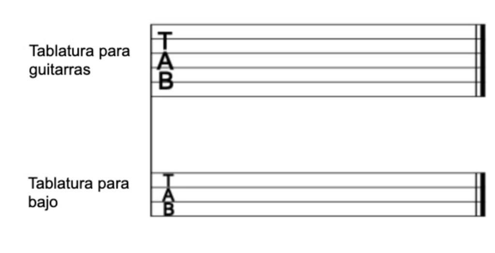

Las Notas de la Guitarra
Es común conocer las siete notas básicas (Do, Re, Mi, Fa, Sol, La y Si).
Pero, si prestaste atención, tenemos en total doce semitonos separando
una octava, lo que nos lleva a concluir que tenemos doce notas. En
realidad, tenemos doce sonidos diferentes. Las notas, como veremos
más adelante, pueden ser más.

Intervalos de Guitarra
Antes de profundizar en cualquier otro concepto, es crucial entender qué son
los intervalos. Los intervalos son, básicamente, la distancia entre dos
notas musicales y saber clasificarlos nos ayudará a entender la construcción
de escalas y acordes.
Se clasifican teniendo en cuenta dos características: el número de notas que
forman el intervalo y el número de semitonos que separan esas dos notas.
Por ejemplo: el intervalo entre Do y Sol. Están cinco notas (Do, Re, Mi, Fa
y Sol), lo que lo convierte en un intervalo de 5ª.
En cambio, entre las notas Mi y Fa solo hay dos notas, Mi y Fa, clasificándolo
como un intervalo de segunda.
El semitono es, en la afinación estándar de la música occidental, la menor
distancia entre dos notas. El conjunto de dos semitonos es el tono entero,
o simplemente tono.
De acuerdo con los semitonos, los intervalos se clasifican de esta manera:

Para identificar un semitono en la guitarra, bajo, ukelele y otros
instrumentos de cuerda con trastes, el semitono corresponde a la
separación de cada espacio entre dos trastes. Es decir, al presionar
espacios vecinos, te estás moviendo por semitonos.
Alteraciones de la Guitarra
Las alteraciones musicales son signos que se utilizan para modificar
la altura de las notas. Estas modificaciones pueden ser hacia arriba
(aumento de tono) o hacia abajo (disminución de tono). Las
alteraciones más comunes son el sostenido (#), el bemol (b),
el doble sostenido (x), el doble bemol (bb) y el becuadro (♮).
.jpg)
1. Sostenido (#)
El sostenido eleva la altura de una nota en un semitono. En la guitarra,
esto significa que la nota se tocará un traste más adelante. Por ejemplo,
si tenemos la nota Do y le agregamos un sostenido (#), se convierte en
Do sostenido (Do#).
2.Bemol (b)
El bemol baja la altura de una nota en un semitono. En la guitarra,
esto significa que la nota se tocará un traste más atrás. Por ejemplo
, si tenemos la nota Si y le agregamos un bemol (b), se convierte en
Si bemol (Sib).
3. Doble Sostenido (x)
El doble sostenido eleva la altura de una nota en dos semitonos,
es decir, un tono completo. En la guitarra, esto significa que la
nota se tocará dos trastes más adelante. Por ejemplo, si tenemos
la nota Do y le agregamos un doble sostenido (x), se convierte en
Do doble sostenido (Dox).
4. Doble Bemol (bb)
El doble bemol baja la altura de una nota en dos semitonos, es decir,
un tono completo. En la guitarra, esto significa que la nota se tocará
dos trastes más atrás. Por ejemplo, si tenemos la nota Mi y le
agregamos un doble bemol (bb), se convierte en Mi doble bemol (Mibb).
5. Becuadro (♮)
El becuadro se utiliza para cancelar el efecto de un sostenido o un
bemol previo. Si una nota ha sido alterada con un sostenido o un
bemol, el becuadro la devuelve a su estado natural. Por ejemplo,
si tenemos la nota La bemol (Lab) y luego aparece un becuadro antes
de la nota La, se convierte en La natural (La).
¿Cómo se usan las alteraciones en la guitarra?
Las alteraciones se utilizan en la guitarra para crear diferentes efectos y
sonidos. Por ejemplo, se pueden utilizar para crear acordes y escalas alteradas,
o para modificar melodías y hacerlas más interesantes.
Es importante recordar que las alteraciones solo afectan a la nota a la que se
aplican y a las notas del mismo nombre que se encuentran en el mismo compás. Si
la misma nota aparece en otro compás, la alteración no se aplica a menos que
se indique nuevamente.
Elementos Teóricos
Es común escuchar que la música tiene tres elementos básicos: melodía,
armonía y ritmo. Estos realmente forman parte de los elementos esenciales,
pero hay otros igualmente importantes para la experiencia musical, como el
timbre, la forma, la agógica, la articulación, etc.
El enfoque en ritmo, melodía y armonía se debe a que estos elementos pueden
explicarse adecuadamente en términos musicales, sin muchos inconvenientes,
y son más amplios.
Melodía
Lo que llamamos melodía puede considerarse el estudio o análisis de las
relaciones horizontales entre las notas, es decir, en secuencia. Generalmente,
estas secuencias forman las partes que cantamos o que más recordamos de una
canción. Es importante tener en cuenta que lo que consideramos una melodía
puede variar según el género musical e incluso según el instrumento para
el cual fue compuesta. Así, una melodía para piano es diferente de una
para un coro. A su vez, una melodía en la cumbia es diferente de una
melodía en el rock.
Escalas
Las melodías que escuchamos suelen estar compuestas utilizando alguna escala musical.
Las escalas son secuencias de notas que siguen un patrón de intervalos. Entre las
más conocidas están las escalas cromática, mayor, menor y pentatónica.
La escala cromática se compone de 12 intervalos de semitono.

La escala mayor está compuesta por siete notas diferentes que siguen el siguiente
patrón: T-T-st-T-T-T-st

La escala menor natural está compuesta por siete notas dispuestas en el siguiente
patrón: T-st-T-T-st-T-T

La escala pentatónica, como su nombre indica, está compuesta por cinco notas
siguiendo el siguiente patrón: T-T-T ½ -T-T ½

Armonía
Si la melodía es la parte que trata con la relación horizontal de las notas,
la armonía, por su parte, trata con la relación vertical, es decir, con las
relaciones que ocurren cuando las notas se tocan simultáneamente.La armonía
se basa en la relación de jerarquía, tensión y reposo de los acordes.
Acordes
Un acorde es una estructura que se forma cuando se combinan al menos tres
notas (o tres alturas) diferentes.Este acorde formado por tres notas
diferentes se llama tríada. Existen cuatro tipos de acordes triádicos:
Acorde Mayor: formado siempre por la
superposición de una tercera mayor y una tercera menor.

Acorde Menor: formado por la superposición
de una tercera menor y una tercera mayor.

Acorde Disminuido: formado por la
superposición de dos terceras menores.

Acorde Aumentado: formado por la
superposición de dos terceras mayores.

Tonalidad
La tonalidad es el conjunto de relaciones entre las notas de una escala y los
acordes resultantes de esa escala. Es decir, los acordes formados al superponer
las notas que contiene dicha escala.A este grupo de acordes se le llama campo
armónico y sus acordes pueden identificarse mediante números romanos y referirse
como grados.Por ejemplo, toda escala mayor dará origen al siguiente campo armónico:
Iº Mayor – IIº Menor – IIIº Menor – IVº Mayor – Vº Mayor – VIº Menor – VIIº
Disminuido Este patrón de acordes será igual en cualquier tonalidad mayor.
Métrica y Ritmo
El ritmo es el resultado de
las diferentes duraciones entre las notas, es decir, la relación entre
cada nota a lo largo del tiempo. La métrica, por otro lado, se refiere a las
jerarquías y formas en que estos ritmos se organizan.Existen 7 figuras
básicas que se usan comúnmente para anotar el ritmo:

#Redonda: Es la figura de mayor duración. Dura 4
tiempos en un compás de 4/4.
#Blanca: Dura 2 tiempos en un compás de 4/4.
#Negra: Dura 1 tiempo en un compás de 4/4.
#Corchea: Dura 1/2 tiempo en un compás de 4/4.
#Semicorchea: Dura 1/4 tiempo en un compás de 4/4.
#Fusa: Dura 1/8 tiempo en un compás de 4/4.
#Semifusa: Dura 1/16 tiempo en un compás de 4/4.
Formas de Notación
Existen diversas formas de notación de la música. Al igual que la teoría,
cada forma de notación se deriva de una práctica y puede servir a sus objetivos.
Por ejemplo, la partitura es una forma de notación que busca alcanzar una
transmisión plural, independiente de los instrumentos. Está formada por cinco
líneas y cuatro espacios. Lo que determinará la nota que cada línea/espacio
representa es la clave.
Existen tres tipos de clave: de Sol, de Fa y de Do
. Estas claves indican dónde se encuentra cada nota respectiva en la partitura.
# Clave de Sol
¿Qué es?
Es la clave más utilizada para la guitarra. Indica que la nota Sol se encuentra
en la segunda línea del pentagrama (contando desde abajo).
¿Cómo se usa en la guitarra?
La mayoría de las partituras para guitarra están escritas en clave de sol.
Esto facilita la lectura, ya que las notas en el pentagrama se
corresponden con las posiciones en el diapasón de la guitarra.
¿Por qué es importante?
Dominar la clave
de sol te permitirá leer partituras de guitarra, tablaturas y comprender
la relación entre las notas en el pentagrama y su ubicación en el
instrumento.
# Clave de Fa
¿Qué es?
Indica
que la nota Fa se encuentra en la cuarta línea del pentagrama (contando desde abajo).
¿Se usa en la guitarra?
No es común ver
partituras de guitarra escritas en clave de fa. Sin embargo, conocerla
te ayudará a entender partituras de otros instrumentos graves, como el
bajo o el violonchelo.
¿Por qué es importante?
Aunque no la uses
directamente en la guitarra, comprender la clave de fa te dará una visión
más amplia de la notación musical y te permitirá colaborar con músicos que
tocan instrumentos en esta clave.
# Clave de Do
¿Qué es?
Indica
que la nota Do se encuentra en la tercera línea del pentagrama (contando desde abajo).
¿Se usa en la guitarra?
No se utiliza directamente en la guitarra.
¿Por qué es importante?
Al igual que la clave
de fa, conocer la clave de do te permitirá comprender partituras de otros
instrumentos, como la viola o algunos instrumentos de viento. Además,
entender cómo se relacionan las diferentes claves te ayudará a comprender
mejor la teoría musical en general.
Tablaturas
La tablatura, por su parte, es una forma de notación muy utilizada entre
instrumentos de cuerda.Está formada por líneas que corresponden al número de
cuerdas del instrumento. Por ejemplo, la tablatura para guitarra tiene 6 líneas.

En lugar de notas, la tablatura indica en qué traste y cuerda el instrumentista debes posicionar el dedo.
Usualmente, la sexta cuerda suele ser la línea más baja y se usan números para indicar los espacios entre trastes (0 siendo la cuerda al aire, 1 el primer traste, 2 el segundo, etc.). Además, algunas tablaturas pueden incluir la indicación de ritmo.
Un último ejemplo de notación muy común son los cifrados americanos. Los cifrados alfabéticos que usamos en América Latina sirven para indicar los acordes que debemos tocar. Se pueden usar encima de las letras, como hacemos en Cifra Club, o incluso encima de partituras y tablaturas.
Los cifrados americanos corresponden los acordes de la siguiente manera:
Observasiones Adicionales
# La tablatura se lee de izquierda a derecha, al igual que la escritura convencional.
Cuando varios números están alineados verticalmente, significa que se deben tocar esas notas al mismo tiempo, como un acorde.
Símbolos
Bends
Se representan con una flecha curva o una letra "b" y un número que indica cuántos semitonos se debe subir la nota.
Hammer-ons y Pull-offs
Se indican con las letras "H" y "P" respectivamente.
Slides
Se representan con una línea que conecta dos números en la misma cuerda.
Palm Muting
Se indica con las letras "PM" y guiones.
Vibrato
Se representa con una línea ondulada.
Tapping
La forma más sencilla y directa de indicar tapping en una tablatura es utilizando la letra "T" mayúscula. Esta letra se coloca encima del número del traste que se debe tocar con la técnica de tapping.
Aprender cómo estudiar teoría musical siendo un principiante puede parecer un universo amplio y cada aspecto puede dividirse en muchos otros temas.
No intentes absorber todo de una vez, empieza por los temas que más te interesen y profundiza poco a poco.
"Que la música suene más fuerte que tus problemas"
-Kurt Cobain